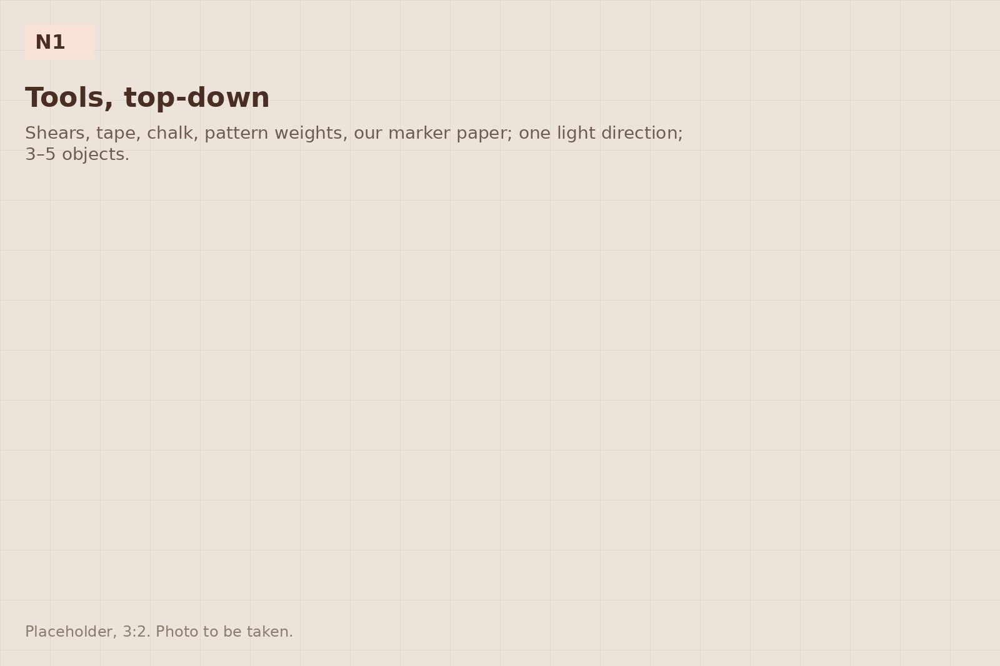
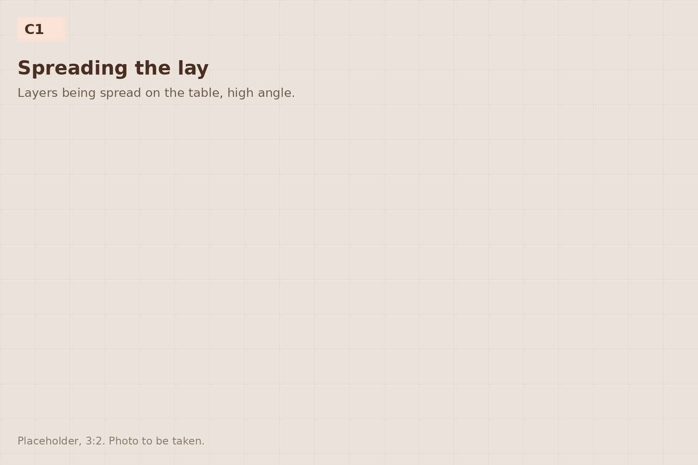
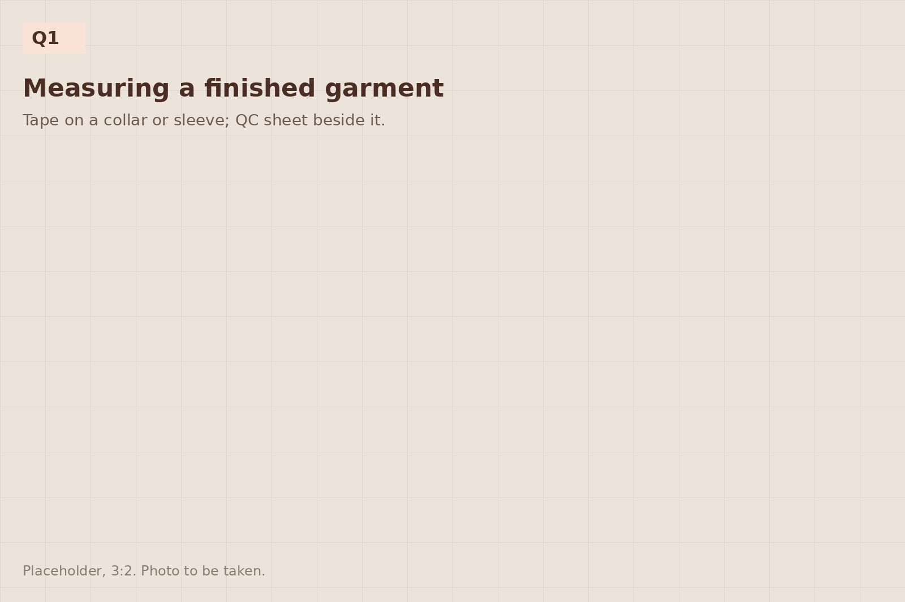
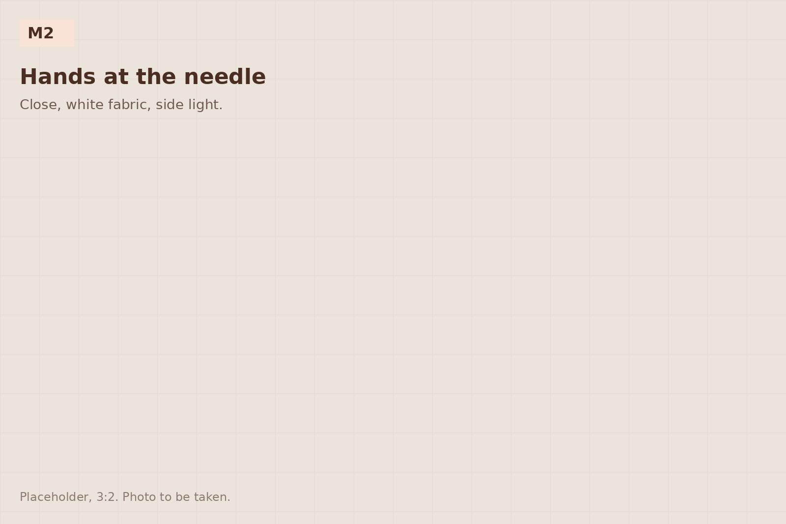

How an order runs
Seven steps from your brief to garments at your warehouse, with what we need from you at each one. A first style typically takes 14–18 weeks from brief to delivery; repeats are faster.
Brief and costing
You send a tech pack, a pattern or a reference garment, with quantities per style and colour and a target delivery date. We return a costing, a sampling plan and any questions on construction or fabric.

Pattern and first sample
The pattern is prepared from your tech pack or block, the marker is made, and a proto is sewn on the sampling machine. You see it on the dummy before anything ships.

Fabric and trims
Your fabric arrives from your mill, or we place the order with the nominated Turkish mill and manage it. Trims are approved against your specification. Fabric is inspected and relaxed before cutting.

Pre-production sample and approval
A sample in bulk fabric and trims, graded sizes on request. Your sign-off releases cutting.

Cutting and sewing
Marker made, lay spread and cut, bundles to the line. In-line checks at key points. You receive a weekly status with photographs.

Finishing and inspection
Pressing, final inspection against your QC sheet and measurement specification, bagging, size cards. Third-party inspection is welcome at the factory.

Dispatch
On hangers in the trailer or boxed and palletised, as your warehouse receives it. Export documents and the origin declaration are prepared by us. The United Kingdom and Europe within 7–10 days by road.

Ready for step one?
Send the tech pack. A costing and a sampling plan within three working days.